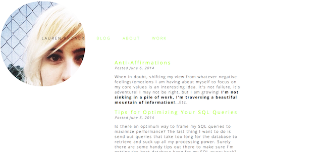
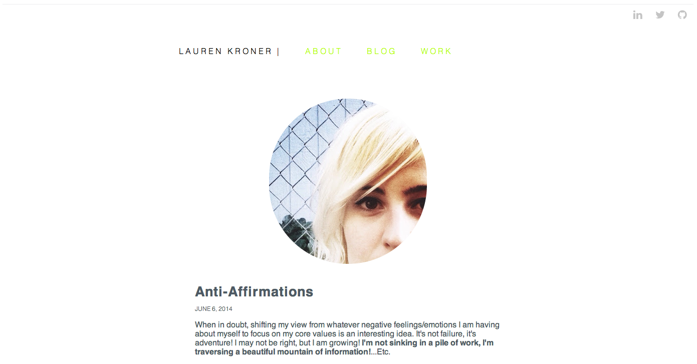

Building A Blog
June 11, 2014
This weeks Dev Bootcamp challenge has been tackling dun dun dun...Making your website look FRESH. PROFESSIONAL. AMAZING. I've been doing a lot of HTML and CSS the past couple of weeks, so I thought sure, why not? This will be a cinch. HAH. This is list of things my website needs adding/improvement:
- Icon buttons to all my social media.
- Jump button.
- Comments section?
- Finish about and projects pages.
- Multi-paged blog with next, older buttons.
- A "Continue Reading" button on blog entry page.
I also decided that since I am a beginner I would try this sans any type of bootstrap framework. A day later, while my site does look significantly better, it is no where near where I would like it to be and is becoming more and more cumbersome as I add in bits here and there. I only managed to accomplish one/two-ish items on my improvement list. I say two-ish because of the rather wonky comment section I added via Disqus and haven't figured out how to format yet. You can find it at the bottom on the one page I added it to, to test here.
Here's a picture of my before and after screen shots to give you an idea of the (slow)progress.
Before

After

Conclusion
I like where I'm at and proud of the site of built. That said there is still much room for improvement...So what's the next step? Spending all this time building has been educational. However, I have come to the conclusion that the method I'm using, while gives me a lot of custimizational power, is way too time consuming! Over the course of two months I have accumulated almost 30 webpages. And individually maintaining them and making changes to them is becoming a full time effort. There has to be an easier way. So I've decided that my next weeks challenge will be doing this challenge over again and going one of two paths to light my website maintaining load:
- Use Bootstrap(This does feel a bit like cheating, so I'll try and avoid it if I can) to create a framework and learn Jekyll/Fluid in order to more easily manage my posts via
- Keep my site, but link my blog page into a self maintaining blog such as Roon. This seems like a worse cheat than Bootstrap does though!
More on this(and hopefully a re-revamped website!) next week...